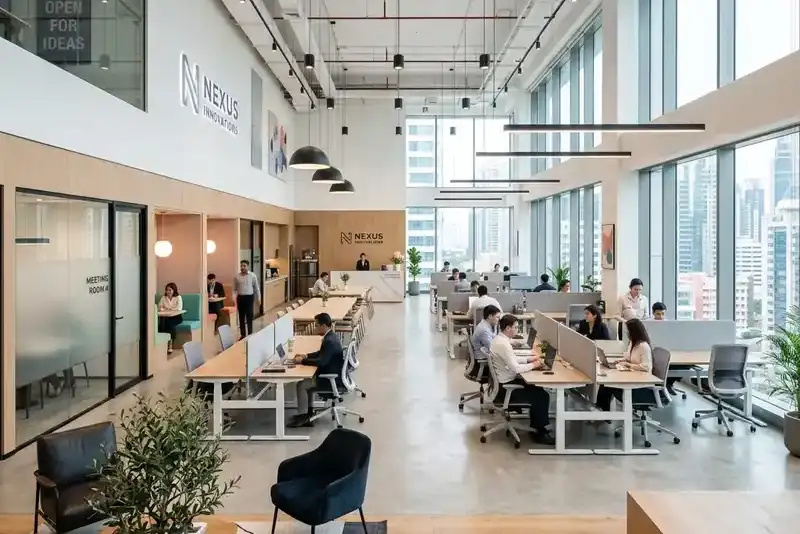

Daftar Isi
Biaya pembangunan villa di Batu Malang dipengaruhi oleh kondisi lahan, luas bangunan, kualitas material, serta tingkat kompleksitas desain yang dipilih oleh pemilik.
- Komponen biaya utama meliputi material, tenaga kerja, dan pengurusan izin
- Lahan berkontur umumnya membutuhkan biaya pondasi tambahan
- Kualitas material menjadi faktor terbesar dalam menentukan total anggaran
- Desain yang kompleks cenderung meningkatkan biaya konstruksi secara keseluruhan
- Perencanaan RAB yang matang membantu menghindari pembengkakan biaya
Apa Saja Komponen Utama Biaya Pembangunan Villa?
Komponen utama biaya pembangunan villa terdiri dari biaya material bangunan, upah tenaga kerja, biaya pengurusan izin, serta biaya desain dan pengawasan proyek.
Rincian komponen biaya secara umum meliputi:
- Biaya material struktur, seperti pondasi, dinding, dan atap
- Biaya material finishing, termasuk lantai, cat, dan sanitasi
- Upah tenaga kerja tukang dan mandor selama proses konstruksi
- Biaya pengurusan izin mendirikan bangunan sesuai regulasi setempat
- Biaya jasa desain arsitektur dan pengawasan proyek oleh kontraktor
Mengapa Kondisi Lahan Berkontur Memengaruhi Biaya?
Kondisi lahan berkontur memengaruhi biaya karena membutuhkan penanganan pondasi khusus, sistem drainase tambahan, serta pekerjaan pematangan lahan sebelum konstruksi utama dapat dimulai.
Beberapa alasan mengapa lahan berkontur cenderung menambah biaya:
- Membutuhkan pondasi bertingkat atau cakar ayam yang lebih kompleks
- Memerlukan sistem drainase tambahan untuk mencegah erosi dan genangan air
- Membutuhkan pekerjaan cut and fill untuk meratakan area bangunan
- Aksesibilitas alat berat yang lebih terbatas di lahan miring
- Potensi kebutuhan dinding penahan tanah (retaining wall) pada area tertentu
Kawasan Batu dan sekitarnya memang dikenal memiliki topografi berbukit, sehingga penanganan lahan seperti ini menjadi hal yang umum dihadapi oleh kontraktor villa di wilayah tersebut.
Bagaimana Kualitas Material Memengaruhi Total Biaya?
Kualitas material menjadi salah satu faktor terbesar dalam menentukan total biaya pembangunan villa, karena selisih harga antara material standar dan material premium dapat memengaruhi anggaran secara signifikan.
Beberapa pertimbangan terkait material:
- Material struktur berkualitas baik dapat meningkatkan daya tahan bangunan dalam jangka panjang
- Material finishing premium umumnya memengaruhi nilai estetika dan daya jual villa
- Pemilihan material lokal dapat membantu menekan biaya distribusi dibandingkan material impor
- Material tahan cuaca lembap penting dipertimbangkan mengingat iklim pegunungan di kawasan ini
Bagaimana Cara Mengelola Anggaran agar Tetap Efisien?
Cara mengelola anggaran pembangunan villa agar tetap efisien adalah dengan menyusun RAB secara rinci sejak awal, menetapkan skala prioritas kebutuhan, serta melakukan pengawasan berkala terhadap realisasi anggaran di lapangan.
Tips pengelolaan anggaran yang dapat diterapkan:
- Susun RAB secara rinci bersama kontraktor sebelum proyek dimulai
- Tentukan prioritas antara kebutuhan struktural dan estetika
- Sisihkan dana cadangan untuk mengantisipasi biaya tak terduga
- Lakukan pembayaran bertahap sesuai progres agar mudah dipantau
- Bandingkan penawaran dari beberapa kontraktor sebelum menentukan pilihan akhir